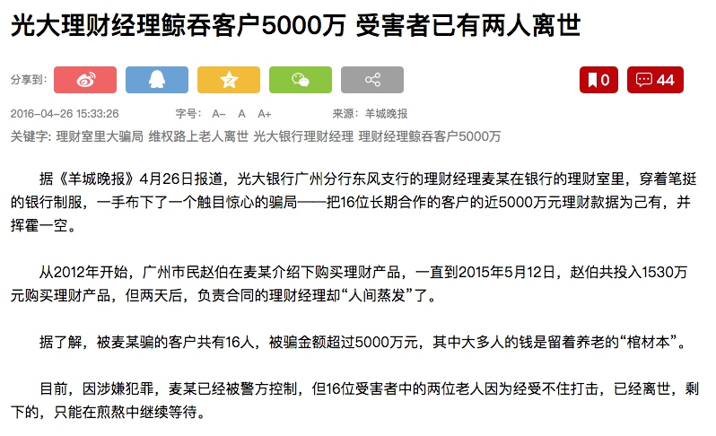

<!DOCTYPE html>
<!--[if IEMobile 7 ]><html class="no-js iem7"><![endif]-->
<!--[if lt IE 9]><html class="no-js lte-ie8"><![endif]-->
<!--[if (gt IE 8)|(gt IEMobile 7)|!(IEMobile)|!(IE)]><!--><html class="no-js"><!--<![endif]-->
<head>
  <meta charset="utf-8">
  <title>
    
  慧响时评：理财经理鲸吞客户5000万 当下如何守护好钱袋子？ - 智凝聚财
  

  </title>
  <meta name="author" content="">
  <meta name="description" content="投资、理财、信用卡的分享会">

  <meta name="HandheldFriendly" content="True">
  <meta name="MobileOptimized" content="320">
  <meta name="viewport" content="width=device-width, initial-scale=1">
  
  <link href="asset/css/screen.css" media="screen, projection" rel="stylesheet" type="text/css">
  <link href="atom.xml" rel="alternate" title="智凝聚财" type="application/atom+xml">
  <script src="asset/js/modernizr-2.0.js"></script>
  <script src="asset/js/jquery.min.js"></script>
  <script src="asset/highlightjs/highlight.pack.js"></script>
  <link href="asset/highlightjs/styles/solarized_light.css" media="screen, projection" rel="stylesheet" type="text/css">
  <script>hljs.initHighlightingOnLoad();</script>

  <style type="text/css">
  .cat-children-p{ padding: 6px 0px;}
  .hljs{background: none;}
  </style>
  <script type="text/javascript">
  var isAddSildbar = true;
  </script>
  <script src="asset/js/octopress.js" type="text/javascript"></script>
</head>
<script type="text/javascript">
//链接新开窗口
function addBlankTargetForLinks () {
  $('a[href^="http"]').each(function(){
      $(this).attr('target', '_blank');
  });
}
$(document).ready(function(event) {
  addBlankTargetForLinks();
});
</script>
<body   >
  <header role="banner"><hgroup>
  <h1><a href="index.html">智凝聚财</a></h1>
  
    <h2>投资、理财、信用卡的分享会</h2>
  
</hgroup>

</header>
  <nav role="navigation"><ul class="subscription" data-subscription="rss">
  <li><a href="atom.xml" rel="subscribe-rss" title="subscribe via RSS">RSS</a></li>
  
</ul>
  
<form action="http://google.com/search" method="get">
  <fieldset role="search">
    <input type="hidden" name="q" value="site:" />
    <input class="search" type="text" name="q" results="0" placeholder="Search"/>
  </fieldset>
</form>
  
<ul class="main-navigation">

  <li id=""><a target="self" href="index.html">Home</a></li>

  <li id=""><a target="_self" href="archives.html">Archives</a></li>

</ul>

</nav>
  <div id="main">
    <div id="content"> 
<div>
	<article class="hentry" role="article">
	<header>
			  	<h1 class="entry-title">慧响时评：理财经理鲸吞客户5000万 当下如何守护好钱袋子？</h1>
				<p class="meta"><time datetime="2017-05-03T18:08:25+08:00" pubdate data-updated="true">2017/5/3 18:8 下午</time></p>
			 </header>
		  	<div class="entry-content">
			  	<p>近期理财经理卷走客户理财资金的事情频发，也有报道说“光大银行理财经理私吞客户5000万”，这下让很多人心慌了：当下如何守护好钱袋子？</p>

<span id="more"></span><!-- more -->

<p>当然，经过慧响的查证，此事为2016年4月发生的事，已经发生了一年，并不是什么新闻，只是因为之前民生银行发生的事情使得这件事又浮于水面。</p>

<p></p>

<p>但是，比今年民生理财经理卷款更触目惊心的是，当时所受骗大部分受骗的是老人。截止目前，麦某已经被警方控制，但16位受害者中的两位老人因为经受不住打击，已经离世，剩下的，只能在煎熬中继续等待。</p>

<blockquote>
<p><strong>以下原引《羊城晚报》报道</strong></p>

<p><strong>理财室里上演大骗局</strong></p>

<p>从2012年开始，广州市民赵伯在麦某介绍下购买理财产品，从未出过任何问题，老人家对麦某非常信任，每次只要是他推荐的理财产品，他一定会捧场买上一些。</p>

<p>2015年4月17日，在麦某推荐下，赵伯购买了860万元“光大银行中融融金1号”理财产品，且“理财产品预约/购买结果”单加盖有光大银行东风支行业务专用章。2015年5月12日，赵伯再次购买670万元上述同类理财产品时，麦某在柜台上操作后，给了一张同样的银行打印的“理财产品预约/购买结果”单，并告知过两天来取盖有公章的正式合同，两天后赵伯却再也联系不上麦某了。</p>

<p>投入1530万元购买理财产品，负责合同的理财经理却“人间蒸发”了：银行先是说他休工休假，后又说他已经辞职了。 <u>“这笔钱是我父母这辈子的积蓄，现在这笔棺材本都没了。”赵伯的女儿告诉记者，她父亲现在身体状况非常差，“一说起这件事，他就特别激动。”</u>另一位受害客户董女士的情况有所不同。她是家里的长女，父母、兄弟姐妹的钱都交给她管理。她于去年4月29日投入350万元，她说自己购买理财产品达10年之久，“购买流程绝对没有问题，这个和我以前买的都是一样的。”</p>

<p>在接受记者采访时，董小姐还不停重复：“光大银行是国家认可的，它门上就贴着‘国有银行、理财专家’，我不相信它相信谁？”赵伯的女儿说，父亲也是出于对光大银行的信任才去买的，“家门口那么多家银行，他都不去，偏偏要坐公车去东风路那家光大，父亲说，自己的医保卡是光大银行的，信得过！”</p>
</blockquote>

<p>而对于此事件，也有理财相关人士分析了案情：</p>

<blockquote>
<p>从案例情况看，光大银行至少需要在内控管理上解释以下质疑：</p>

<p>第一，大额理财购买有没有设置“经办人员+授权人员”的双人复核流程？如果设置了双人复核流程，为何第二次没有盖公章的670万理财可以打印出 “理财产品预约/购买结果”单？</p>

<p>第二，对本行从业人员的个人账户异常情况（比如大额资金往来）监测有没有落到实际工作中？</p>

<p>第三，大额资金转账有没有授权复核流程设置，有没有严格执行在反洗钱系统对大额资金交易进行报备？</p>
</blockquote>

<p>当然了，对于这种情况，适当给爸妈科普一些理财知识，做到分散资产，不要过分集中在同一个地方，不失为一个当儿女应尽的义务。</p>

<p>重要的是把握理财的尺度，掌握一下一些基础的知识，同时多和爸妈沟通。对于老人家，一旦遇到打击，无论是生理还是心理都是巨大的打击，为此一定耐心对父母进行基本的理财观念的引导，未雨绸缪，才能守护住自己的钱袋子~</p>

<p>最后慧响时评给几点理财小建议：</p>

<ol>
<li>评估。根据自己的能力，评估能承受多少的亏损，设置一个最大能够忍受的底线。</li>
<li>冷静。设定一个最高的利率，特别是对于P2P，不要盲目追高，要对市场的平均值有所了解，同时要关注一下平台的背景和历史经营情况。</li>
<li>分散。分散风险，分散风险，再好的理财、基金和证券都不要全部投进去。</li>
<li>规避。除了理财，保险等其他规避风险的措施也记得做好。</li>
</ol>

			</div>

		
	  
		<footer>
		 <p class="meta">

			
			<span class="categories">
			 
			</span>
		    </p>
		    <p class="meta">
		      
		 </p>
	    
		<div class="sharing">
		  
          

          

		</div>

	    <p class="meta">
	    
	        <a class="basic-alignment left" href="14939066415320.html" 
	        title="Previous Post: 智凝聚财：出国刷信用卡 不要忘记这个费用">&laquo; 智凝聚财：出国刷信用卡 不要忘记这个费用</a>
	    
	    
	        <a class="basic-alignment right" href="14936451435664.html" 
	        title="Next Post: 【用卡实测：兴业PASS卡】是什么，让持卡人为了这张卡而颤抖？">【用卡实测：兴业PASS卡】是什么，让持卡人为了这张卡而颤抖？ &raquo;</a>
	    
	    </p>
	  </footer>
	</article>
</div>
 <aside class="sidebar"> 

	<section>
	  <h1>Categories</h1>
	  <ul id="recent_posts">
	  
	        
	      </li>
	   
	  </ul>
	</section>
	<section>
	  <h1>Recent Posts</h1>
	  <ul id="recent_posts">
	  
	      
		      <li class="post">
		        <a href="14939066415320.html">智凝聚财：出国刷信用卡 不要忘记这个费用</a>
		      </li>
	     
	  
	      
		      <li class="post">
		        <a href="14938061053256.html">慧响时评：理财经理鲸吞客户5000万 当下如何守护好钱袋子？</a>
		      </li>
	     
	  
	      
		      <li class="post">
		        <a href="14936451435664.html">【用卡实测：兴业PASS卡】是什么，让持卡人为了这张卡而颤抖？</a>
		      </li>
	     
	  
	      
		      <li class="post">
		        <a href="14923401157072.html">提额整理</a>
		      </li>
	     
	  
	      
		      <li class="post">
		        <a href="14917931548221.html">【用卡实测：交通银行标准卡（万事达版）】恐怖！国有第五行开始用这个对付持卡人了……</a>
		      </li>
	     
	  
	      
	  
	      
	  
	      
	  
	      
	  
	      
	  
	      
	   
	  </ul>
	</section>
	
</aside> </div></div>
  <footer role="contentinfo"><p>
  Copyright &copy; 2014 -  -
  <span class="credit">Powered by <a target="_blank" href="http://www.mweb.im">MWeb</a> &nbsp;&nbsp; Theme by <a href="http://octopress.org">Octopress</a></span>
</p>

</footer>

  
    


<script src="https://s96.cnzz.com/z_stat.php?id=1870283&web_id=1870283" language="JavaScript"></script>
</body>
</html>